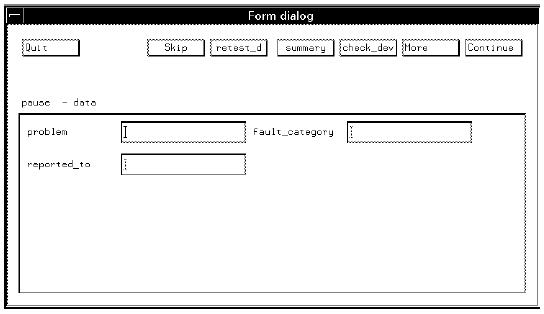
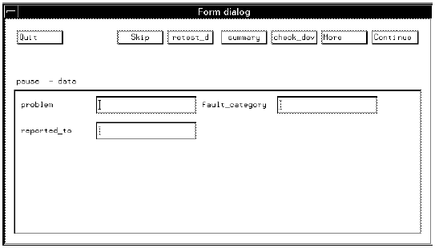

SCREEN_DIALOG
This expression creates a window in the production environment with a predefined set of buttons. A few of the buttons' names and functionalities will change depending on which level the SCREEN_DIALOG (or LINE_DIALOG) is used; for example, the buttons check_dev and restest_d appear when the SCREEN_DIALOG is used in a device level, while on a wafer level they appear as check_waf and retest_w.
Including the following lines in the ON_PAUSE section of an application model file, results in the screen shown in ON_PAUSE.
{ON_PAUSEpause:
SCREEN_DIALOG;

Normally, however, you would use this expression in conjunction with the DIALOG_INPUT expression; the following lines show a typical example.
The lines,
{ON_PAUSEpause:
SCREEN_DIALOG
*problem=DIALOG_INPUT/REGEXP(string);
*fault_category=DIALOG_INPUT/REGEXP(string);
*reported_to=DIALOG_INPUT/REGEXP(string);
result in the following screen (when the test is paused),
